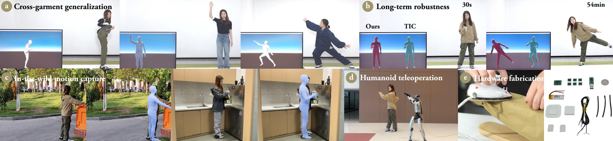

课题组介绍
Human+团队自2018年起致力于基于智能柔性穿戴的人体动作捕捉领域的研究，团队围绕硬件设计、服装集成、软件平台、算法创新、应用落地等方面开展了大量工作，突破了包括传感器布局、信号模式识别、自然人机交互等难题，实现了日常条件下对人体长时间、无感化的人体运动跟踪技术。团队在CVPR、NeurIPS、ICML、ACM To CHI、ACM CHI等发表CCF-A/Trans论文三十余篇，获得了SIGGRAPH 2025最佳论文奖（入选率5‰）、CVPR 2020最佳论文奖提名、ChinaVR 2021最佳墙报奖等奖项。
团队自2025年起，开始关注具身智能领域，重点在基于团队前期的人体动作捕捉领域的工作基础，开展长期、全天候的人体数据采集（包括第一视角画面、身体动作、手部操作等），并将这些数据迁移到机器人本体上。
课题组主页：http://humanplus.xyz/

课题组成员
教授：郭诗辉
助理教授：陈安军